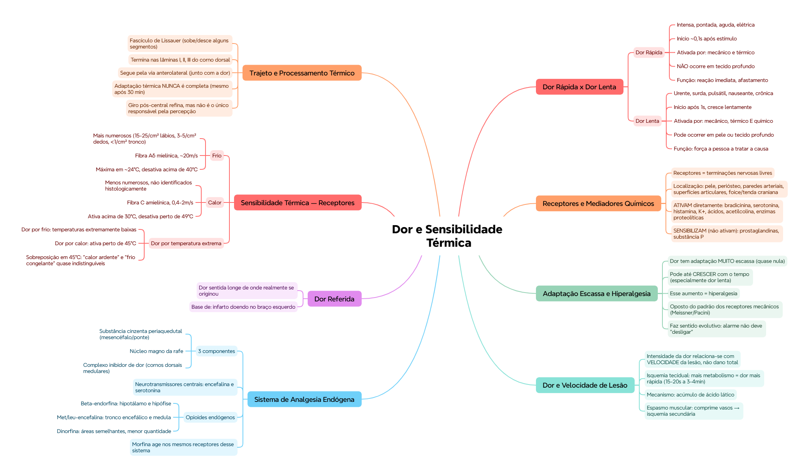

🎯 O que você vai conseguir fazer depois desse capítulo
Diferenciar dor rápida de dor lenta — tipo de estímulo, velocidade, e significado funcional
Nomear os principais mediadores químicos que ativam ou sensibilizam receptores de dor
Explicar hiperalgesia e por que a dor quase não se adapta
Descrever o sistema de analgesia endógena e os opioides envolvidos
Caracterizar os receptores de frio e calor — localização, fibras, faixas de temperatura
Aplicar o conceito de dor referida num caso clínico
⚡ Dor rápida x dor lenta
A dor não é uma sensação única — existem dois tipos, com timing e função bem diferentes.
Dor rápida
Dor lenta
Também chamada
Intensa, pontada, aguda, elétrica
Urente, surda, pulsátil, nauseante, crônica
Início
~0,1 s após o estímulo
Após 1 s, crescendo lentamente
Estímulos que ativam
Mecânicos e térmicos
Mecânicos, térmicos E químicos
Tecido profundo
Não é sentida
Pode ocorrer em pele ou tecido profundo
🟢 Significado funcional: a dor rápida avisa em alta velocidade que algo lesivo está acontecendo — sua função é fazer a pessoa reagir de imediato e se afastar do estímulo. A dor lenta cresce com o tempo até se tornar intolerável, forçando a pessoa a tratar a causa (não é sobre reflexo imediato, é sobre insistência).
🔬 Receptores e estímulos que ativam a dor
Os receptores de dor são terminações nervosas livres, distribuídas pelas camadas superficiais da pele e em tecidos internos como o periósteo, paredes arteriais, superfícies articulares, e a foice e tenda na abóbada craniana.
São ativados por 3 tipos de estímulo:
Mecânicos — ativam dor rápida
Térmicos — ativam dor rápida
Químicos — ativam só dor lenta
📌 O que o professor cobra nesta seção: os mediadores químicos que ativam diretamente a dor — bradicinina, serotonina, histamina, íons potássio, ácidos, acetilcolina e enzimas proteolíticas. Prostaglandinas e substância P são diferentes: sensibilizam as terminações (deixam mais fáceis de ativar), mas não ativam diretamente sozinhas.
📈 Adaptação escassa e hiperalgesia
Diferente de quase todos os outros receptores sensoriais, a adaptação dos receptores de dor é muito escassa, às vezes nula. Sob certas condições, a excitação das fibras de dor pode até crescer com o tempo se o estímulo persistir — especialmente no tipo lento, surdo, nauseante. Esse aumento de sensibilidade tem nome: hiperalgesia.
💭 Isso é o oposto do padrão que você viu nos receptores mecânicos (Meissner, Pacini = adaptação rápida). Dor é, por natureza, um sistema de alarme que NÃO quer "desligar" — faz sentido evolutivo que ele resista à adaptação.
🩹 Dor e velocidade de lesão tecidual
A intensidade da dor não se relaciona com o dano total já ocorrido, mas com a velocidade com que a lesão está acontecendo — vale pra calor, infecção bacteriana, isquemia, contusão.
Causa
Mecanismo de dor
Isquemia tecidual
Quanto maior o metabolismo do tecido, mais rápido a dor aparece (15-20s a 3-4min) — por acúmulo de ácido lático
O corpo tem um sistema próprio de supressão da dor, com 3 componentes principais:
Substância cinzenta periaquedutal e áreas periventriculares do mesencéfalo e parte superior da ponte
Núcleo magno da rafe, com seu núcleo reticular paragigantocelular
Um complexo inibidor de dor localizado nos cornos dorsais da medula espinal
Os neurotransmissores centrais desse sistema são a encefalina e a serotonina.
Opioide endógeno
Localização principal
β-endorfina
Hipotálamo e hipófise
Met-encefalina e leu-encefalina
Tronco encefálico e medula espinal
Dinorfina
Áreas semelhantes às encefalinas, em menor quantidade
💡 É basicamente o sistema que os opioides farmacológicos (morfina, por exemplo) imitam — eles agem nos mesmos receptores desse sistema endógeno de analgesia.
📍 Dor referida
Muitas vezes a pessoa sente dor numa parte do corpo distante do tecido que realmente originou o estímulo — esse fenômeno chama dor referida. É a base fisiológica de por que um infarto pode doer no braço esquerdo, por exemplo.
✅ O que você deve lembrar
Dor referida = dor sentida longe de onde ela realmente se originou. Base fisiológica de muitos achados clínicos clássicos (dor de infarto no braço, por exemplo).
⚠️ Erro comum
Achar que substância P e prostaglandinas ATIVAM a dor diretamente — elas só SENSIBILIZAM as terminações, tornando-as mais fáceis de disparar por outros mediadores.
⚡ Questão rápida
Por que a dor por isquemia demora mais pra aparecer em tecidos de baixo metabolismo?
Porque o acúmulo de ácido lático (o gatilho da dor isquêmica) depende da velocidade do metabolismo tecidual — tecidos de metabolismo baixo acumulam esse produto mais devagar.
🧠 Autoexplicação
Por que faz sentido, do ponto de vista funcional, que a dor tenha adaptação quase nula, ao contrário da maioria dos outros receptores sensoriais?
A dor funciona como um sistema de alarme de dano tecidual — sua utilidade depende justamente de continuar sinalizando enquanto o dano ou a ameaça persistir. Se a dor se adaptasse como o tato (deixando de ser sentida com o tempo), o organismo perderia a motivação contínua de proteger a área lesada ou de buscar tratamento, o que aumentaria o risco de lesão adicional. A adaptação escassa — e a hiperalgesia em alguns casos — garante que o sinal de alarme se mantenha, ou até se intensifique, enquanto o problema não for resolvido.
🌡️ Sensibilidade térmica — receptores de frio e calor
Receptor
Densidade/Localização
Fibra
Velocidade
Frio
Mais numerosos que os de calor. 15-25 pontos/cm² nos lábios; 3-5/cm² nos dedos; <1/cm² no tronco
Aδ mielínica
~20 m/s
Calor
Menos numerosos, não identificados histologicamente (só por testes psicofísicos)
C amielínica
0,4–2 m/s
Dor por temperatura extrema
Ativada em frio ou calor extremos
—
—
🟢 Faixas de temperatura que ativam cada fibra: • Fibra de dor por frio: temperaturas extremamente baixas (perto de congelamento) — para de responder se a pele já estiver praticamente congelada
• Fibra de frio: estimulação máxima em ~24°C; desativa pouco acima de 40°C; pode reativar perto de 45°C por lesão das terminações
• Fibra de calor: ativa acima de 30°C; desativa perto de 49°C
• Fibra de dor por calor: ativa perto de 45°C
🏥 Perceba a sobreposição: perto de 45°C, tanto a fibra de dor por calor quanto a fibra de frio (por lesão) podem disparar — isso explica o fenômeno de "calor ardente" e "frio congelante" serem sensações quase indistinguíveis em temperaturas extremas.
🛤️ Trajeto e processamento da sensibilidade térmica
Ao entrar na medula espinal, as fibras térmicas sobem ou descem alguns segmentos pelo fascículo de Lissauer, terminando principalmente nas lâminas I, II e III do corno dorsal — depois seguem pela via anterolateral, junto com a dor.
A adaptação térmica nunca é completa — a resposta inicial a uma queda de temperatura é intensa, esmaece rápido nos primeiros segundos e desacelera ao longo de até 30 minutos, mas nunca chega a 100%. Mudanças rápidas de temperatura geram sensações intensificadas.
💡 A remoção experimental do giro pós-central reduz — mas não elimina — a capacidade de distinguir gradações finas de temperatura, mostrando que o córtex refina a percepção térmica, mas não é o único responsável por ela.
⚠️ Onde todo mundo escorrega
Achar que dor lenta só é ativada por estímulo químico — ela é ativada pelos 3 tipos (mecânico, térmico E químico); é a dor RÁPIDA que só responde a mecânico e térmico
Confundir "ativar" com "sensibilizar" — prostaglandinas e substância P sensibilizam, não ativam diretamente
Achar que os receptores de calor já foram identificados histologicamente — eles só têm existência confirmada por testes psicofísicos
Esquecer que a dor tem adaptação quase nula — é a exceção à regra geral de adaptação sensorial
📚 Se você só puder lembrar de 5 coisas
Dor rápida = mecânico/térmico, ~0,1s, reflexo de retirada. Dor lenta = mecânico/térmico/químico, cresce com o tempo
Sistema de analgesia: substância cinzenta periaquedutal + núcleo magno da rafe + complexo inibidor medular, via encefalina/serotonina
Frio = fibra Aδ (rápida). Calor = fibra C (lenta)
Adaptação térmica nunca é 100% completa
🩺 Caso Clínico Progressivo — Infarto Agudo do Miocárdio
Vamos acompanhar o Sr. Osvaldo, 58 anos, num quadro clássico de dor referida. O caso evolui em 3 níveis — clica em cada um pra ver como as coisas vão se desenrolando.
🧠 Mapa Mental — Dor, Analgesia e Sensibilidade Térmica
Visão geral do capítulo em formato visual — ideal pra revisão rápida antes da prova. O conteúdo completo, com explicações e exemplos, está no Guia de Estudo.

🃏 Flashcards — SM-2 real + interface Anki
O sistema guarda, no seu navegador, quais cards você já sabe bem e quais precisam voltar mais cedo — cada vez que você avalia um card, ele recalcula quando ele deve voltar.
Cartão 1 / 0Dominados: 0
PERGUNTA
RESPOSTA
✅ Banco de Questões Comentadas
10 questões, do mais básico ao mais puxado. Escolhe uma alternativa, depois clica em "Ver comentário completo" — vale a pena ler até quando você acerta, porque o comentário explica cada alternativa, não só a certa.